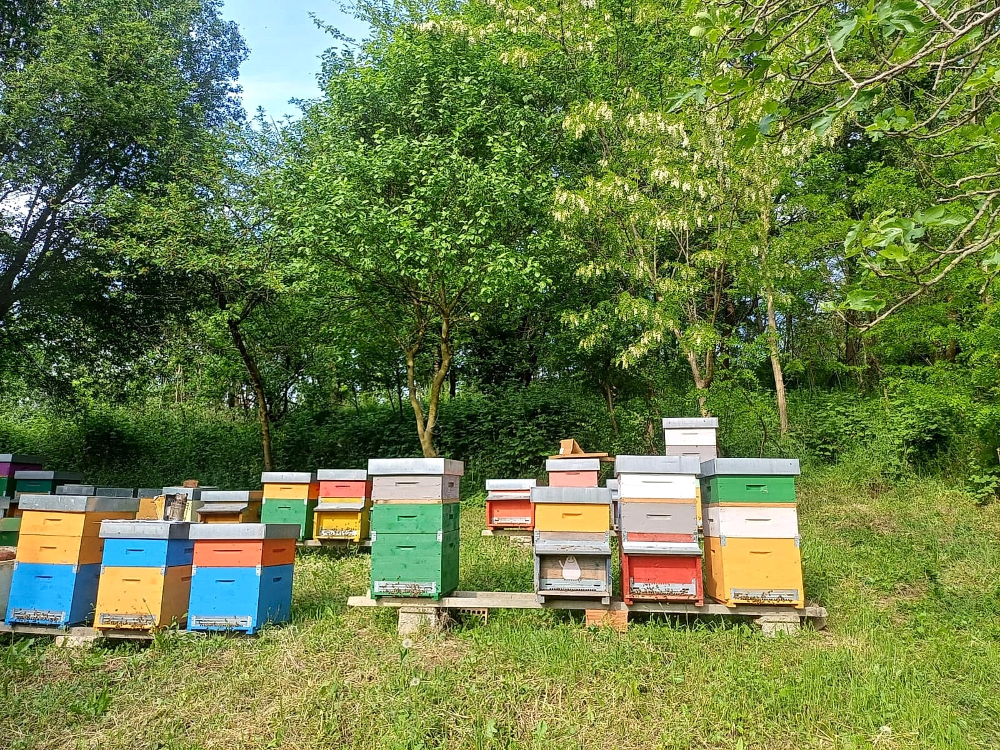

Cos'è il Concorso "Tre Gocce d'Oro – Grandi Mieli d'Italia"?
Nato nel 1981 come "Premio Giulio Piana" e organizzato dall'Osservatorio Nazionale Miele a Castel San Pietro Terme con il contributo del Ministero dell'Agricoltura, della Sovranità Alimentare e delle Foreste, il concorso Tre Gocce d'Oro è il più antico, severo e prestigioso riconoscimento per il miele artigianale in Italia.
Ogni anno oltre mille campioni provenienti da tutte le regioni italiane vengono sottoposti a un doppio esame rigoroso: prima in laboratorio per verificarne la purezza, la freschezza e l'assenza di trattamenti termici, e poi alla cieca da parte dei giudici iscritti all'Albo Nazionale degli Esperti in Analisi Sensoriale del Miele.
Ottenere le Gocce d'Oro significa entrare ufficialmente nella guida dei Grandi Mieli d'Italia: una garanzia assoluta di qualità superiore per chi porta il nostro miele sulla propria tavola.
Analisi di Laboratorio
Controlli chimico-fisici e melissopalinologici certificano il grado di umidità ottimale, la freschezza assoluta (HMF bassissimo) e la purezza botanica del nettare.
Giuria Sensoriale Nazionale
Panel di assaggiatori professionisti iscritti all'Albo Nazionale valutano alla cieca limpidezza, profumo floreale, finezza aromatica e persistenza al palato.
Garanzia Artigianale 100%
Solo i mieli estratti a freddo, non pastorizzati e lavorati nel pieno rispetto del ciclo naturale delle api raggiungono il punteggio necessario per le Gocce d'Oro.
I Nostri Due Attestati Ufficiali
Nella 46ª edizione del concorso, entrambi i lotti del nostro Miele di Acacia (Robinia) presentati in gara hanno conquistato il riconoscimento della giuria nazionale.

Miele di Acacia (Robinia)
Riconoscimento conferito ad Apicoltura Le Api di Rospocchia per l'eccellenza organolettica, la limpidezza cristallina e la purezza floreale.
Numero di Lotto premiato: 15B2026A
Miele di Acacia (Robinia)
Secondo prestigioso attestato nazionale assegnato nella medesima edizione ad Apicoltura Le Api di Rospocchia per la costanza qualitativa della produzione.
Numero di Lotto premiato: 12S2026A
Perché il Nostro Miele di Acacia è Così Speciale?
Il nostro Miele di Acacia (Robinia pseudoacacia) nasce a maggio tra i boschi incontaminati delle colline di Montecalvo Versiggia, nell'Oltrepò Pavese. Qui, lontano da fonti di inquinamento e colture intensive, le fioriture bianche a grappolo regalano un nettare purissimo.
- Colore e Limpidezza: Giallo paglierino chiarissimo, quasi trasparente come cristallo liquido, indice di altissima purezza monofloreale.
- Bouquet Aromatico: Profumo delicato di fiori bianchi d'acacia, baccello di vaniglia fresca e confetto mandorlato.
- Naturalmente Liquido e Digeribile: Ricchissimo di fruttosio naturale, resta liquido a lungo ed è il dolcificante più nobile per tisane, tè, yogurt, formaggi freschi e per l'alimentazione dei bambini.
- Stesso Prezzo dell'Acacia Normale per Tutti: Il nostro Miele di Acacia Premiato è disponibile nei formati da 250 g (€6,00) e 500 g (€8,00) allo stesso prezzo dell'Acacia classica, per dare a tutti la possibilità di assaggiare i lotti premiati!